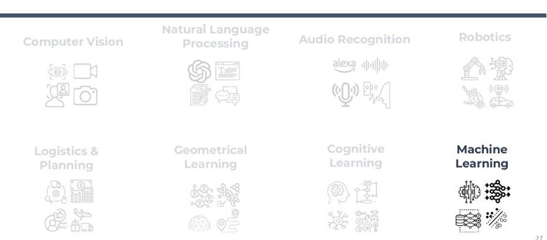
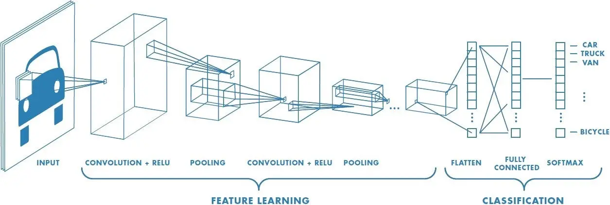

Foundations of Artificial Intelligence
An Introduction to AI for Urban Health Research & Practice
Today's Lecture
What AI is, how it learns, what today's models can do, and how to put them to work for urban health.
Learning Objectives
- Explain how AI systems process information and make decisions.
- Describe the building blocks of AI: data science, machine learning, and deep learning.
- Understand how models learn patterns from data and turn them into outputs.
- Read the current (2026) model landscape — frontier vs. open-weight, and how to compare them.
- Recognize practical considerations for using AI in urban health research and practice.
Why Does Urban Health Need AI?
The pressure
- Urban populations are growing fast and unevenly.
- Data sources and volumes are exploding — sensors, EHRs, imagery, mobility, social media.
- Traditional analytic methods don't scale to this volume and variety.
- Cleaning and processing data is slow and labor-intensive.
The opportunity
- Surface patterns across many data sources at once.
- Near real-time monitoring and early warning.
- Free expert time for judgment, interpretation, and community work.
- Make analysis and communication faster and more accessible.
Opportunities to Augment Your Work
Research & analysis
- Literature search & synthesis
- Statistical coding (R, Python, Stata)
- Data cleaning & processing
- Predictive disease modeling
Surveillance & monitoring
- Real-time monitoring & alerts
- Social determinants from many sources
- Remote sensing & the built environment
- Data collection & follow-up
Communication
- Briefs, memos, and translation
- Documentation & reporting
- Brainstorming & framing
- Community-facing materials
A theme for the week: AI as a capable assistant you direct and check — not an oracle you trust blindly.
Data Science → AI → ML → Deep Learning
Data science
Turning data into insight — statistics + programming + domain knowledge.
Artificial intelligence
Systems that process data, find patterns, and make decisions.
Machine learning
The subset of AI that learns patterns from data instead of being hand-programmed.
Deep learning
ML using many-layered neural networks — what powers most modern AI.
What Exactly Is AI?
"The simulation of human intelligence processes by machines, enabling them to perform tasks that typically require human intervention."
"The science and engineering of making intelligent machines."
"An important feature of a learning machine is that its teacher will often be largely ignorant of what is going on inside."
"The Analytical Engine has no pretensions to originate anything. It can do whatever we know how to order it to perform."
Intelligence here ≈ efficiency at acquiring skills across tasks (Chollet) — perception, learning, reasoning, action.
The Many Areas of AI

A Short History — through June 2026
Symbolic AI
Turing test (1950); the term "AI" coined at Dartmouth (1956). Rule-based expert systems.
Machine learning
Statistical learning takes over. Data + compute beat hand-written rules.
Deep learning
AlexNet (2012) sparks the deep-learning era. Transformers introduced (2017).
Foundation & agentic
ChatGPT (2022); multimodal models; reasoning models and autonomous agents (2025–26).
2026 snapshot: frontier models reason step-by-step, use tools, and run as agents. The landscape shifts month to month (see Part 4).
How We Classify AI
- Narrow — one task, as good as/better than people. Everything today.
- General — human-level across most tasks. Not yet; debated.
- Super — beyond humans at everything. Hypothetical.
- Reactive — no memory (Deep Blue).
- Limited memory — learns from recent data (today's ML & LLMs).
- Theory of mind / self-aware — emerging or theoretical.
Despite the hype, today's systems — including frontier LLMs — are narrow, limited-memory AI.
How AI Learns
What Is Machine Learning?
Combining programming and statistics so computers learn from data and make predictions — without being explicitly programmed for each case.
- Decision process — the model maps inputs to an output (prediction or label).
- Error function — measures how wrong predictions are vs. the truth.
- Optimization — adjust the model to reduce error; repeat until it generalizes.
"Learning" = iteratively tuning parameters so predictions get closer to observed outcomes.
Three Types of Machine Learning
Supervised
Learns from labeled examples to separate or predict.
- Classification
- Regression
Unsupervised
Finds structure in unlabeled data.
- Clustering
- Dimensionality reduction
Reinforcement
Learns by acting in an environment for rewards.
- Trial & error
- Policies
Machine Learning in Urban Health
Supervised
- Crash risk prediction (Li 2011)
- Injury classification (Zayafic 2017)
- Fall prediction (Liu 2010)
- Patient-safety evaluation (Simsekler 2020)
Unsupervised
- Road-crash profiling (Anderson 2008)
- Occupational-injury clusters (Chokor 2016)
- Gait patterns in runners (Jauhiainen 2019)
- Cyberbullying clustering (Foong 2017)
Reinforcement
- Safe autonomous driving
- Rehabilitation & sports
- Healthcare decision-making
- Work-safety optimization (Xie 2023)
Classic ML is still the right tool for many tabular, interpretable urban-health problems — not everything needs a giant model.
Deep Learning & Neural Networks
What Is Deep Learning?
Neural networks with many layers and millions–trillions of parameters that learn abstract patterns directly from raw data — each layer builds on the last.
raw input
"pedestrian"
Why it took off
- Big data to learn from
- GPUs for massive parallel computation
- Better architectures (CNNs, Transformers)
What it enables
- Vision: detection, segmentation
- Language: translation, generation
- Speech, protein folding, image generation
Deep learning processes "raw" data types (pixels, audio, text) with little manual feature engineering.
Inside a Neural Network
- Each neuron takes a weighted sum of its inputs and passes it through a nonlinear "activation" — that nonlinearity is what lets networks learn curved, complex relationships.
- Hidden layers stack neurons to build progressively more abstract features; "deep" just means many layers.
- The output layer is shaped to the task — class probabilities or a number.
The weights are what the network learns. Repeated over many examples until it generalizes — without just memorizing the training data (overfitting).
Three Architectures Behind Modern AI
CNNs
Process visual data hierarchically.
Street & satellite imagery, video.
GNNs
Process networked data.
Road & social networks, molecules.
Transformers
Use attention across a sequence.
Language — and now vision, audio.

The Transformer (2017) is the architecture under essentially every frontier model today.
From Architectures to Foundation Models
internet-scale data
one generalist model
steer it to the task
What they are
- Generalist, scalable models for many tasks
- Billions–trillions of parameters, mostly Transformer-based
- Behavior steered by your prompt / context, not retraining
Why they changed everything
- One model, many tasks — no task-specific training
- Multimodal: text, images, audio, video, code
- Usable via chat & API by non-experts
The 2026 Landscape
The Proprietary Frontier
A handful of providers lead the closed-model frontier. Each ships a flagship (most capable) and a fast/cheap tier — and they trade the top spot constantly.
| Provider | Family | Typically strong at |
|---|---|---|
| Anthropic | Claude (Opus / Sonnet / Haiku) | Coding, agents, careful reasoning, writing |
| OpenAI | ChatGPT / GPT | Coding, creative writing, broad general use |
| Gemini (Pro / Flash) | Reasoning, data analysis, very large context | |
| xAI | Grok | Budget option, real-time / web-connected data |
Version numbers change monthly and the lead changes with them — so don't memorize them. Compare on capability for your task and check a live leaderboard.
Open-Weight Models Are Closing the Gap
The main open families
- DeepSeek — cheap, strong, long context (China)
- Qwen — broad ecosystem, multilingual (Alibaba, China)
- Kimi / GLM / MiniMax — strong coding & agentic (China)
- Gemma — small enough for a single GPU/Mac (Google)
- Llama — long context (Meta)
Why it matters for you
- Run locally → data never leaves your machine (privacy, IRB-friendly)
- No per-token cost; reproducible for research
- Frontier open models now lag closed ones by only ~3 months
- Chinese labs now dominate the top open-weight slots, with Google's Gemma the main Western entry
Today's Models Are Multimodal
A single frontier model can now take in and produce many kinds of data.
Text
Chat, analysis, drafting, translation, summarization.
Images
Describe, analyze, generate, and edit images.
Audio
Transcription, translation, voice, meeting notes.
Video
Understand and generate video (still maturing).
Code
Write, run, debug, and explain code.
Data
Analyze tables, make charts, generate analysis scripts.
We'll go deep on multimodal capabilities (images, video, audio, data) on Day 2.
Benchmarks — and How to Read Them
Common benchmarks
- MMLU-Pro — broad knowledge
- GPQA Diamond — graduate-level science
- MMMU — multimodal reasoning
- ARC-AGI-2 — novel reasoning
- LM Arena — human head-to-head votes
Read with caution
- Contamination — test items may leak into training data
- Benchmarks saturate; scores cluster near the top
- A 2-point gap rarely matters in practice
- Your task ≠ the benchmark — pilot on your data
Talking to Models
Prompt Engineering: The Basics
Techniques that work
- Be specific about role, audience, and format
- Give examples (few-shot)
- Ask it to reason step by step
- Request structured output (tables, JSON)
- State constraints and what to avoid
- Iterate — refine based on the response
Example
"You are an epidemiologist writing for city council. Summarize this surveillance report in 200 words for a non-technical audience. Use plain language; end with 3 recommended actions."
Newer reasoning models need less hand-holding to "think step by step" — but specificity and examples still help.
From Prompt Engineering to Context Engineering
Prompt engineering
- Crafting a single message
- Focused on wording & phrasing
- One interaction at a time
Context engineering
- Designing the whole information environment
- System instructions + tools + retrieved data + history
- Persistent, reusable across interactions
Why it matters: more control, fewer hallucinations (grounding), domain adaptation, and multi-step work. This is the foundation for agents (Day 3).
From Models to Urban Health
Computer Vision for Urban Health


Street-level imagery
Virtual audits of sidewalks, crossings, and infrastructure quality.
Satellite & remote sensing
Land use, informal settlements, heat islands, green space.
Behavior & safety
Pedestrian/vehicle detection, crash-risk environments, mobility.
All powered by CNNs and vision Transformers — the architectures from Part 3 applied to your data.
Language Models for Urban Health
Synthesis
Literature review, evidence summaries, rapid briefs for policymakers.
Unstructured data
Coding survey responses, clinical notes, focus-group transcripts, social media.
Communication
Translation, plain-language materials, tailored community messaging.
Caveat we'll keep returning to: verify outputs, watch for hallucinated facts/citations, and protect sensitive data.
Today's Activities
1 · Explore Gen-AI platforms (35 min)
Compare ChatGPT, Claude, and Gemini on the same urban-health task.
2 · Prompt & context engineering (35 min)
Techniques for better outputs; build a reusable project/system prompt.
3 · Text analysis (15 min)
Use a model to code and summarize open-ended text.
4 · AI writing + Philly AI policy (35 min)
Drafting with AI; discuss the Philadelphia AI policy brief.